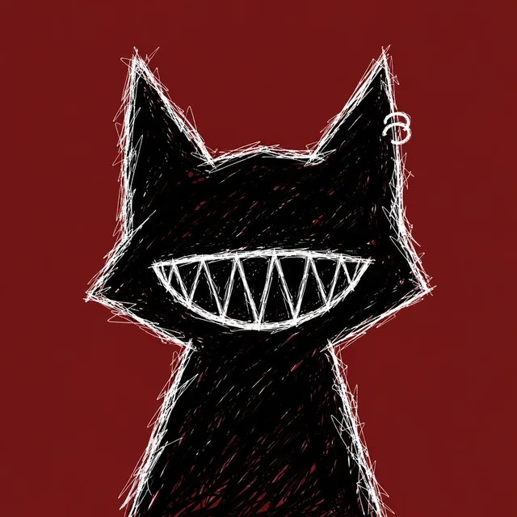

/01
Segurança
segurança web, CTFs e red team, e o lado defensivo também: log, evento e monitoramento com SIEM.
segurança / desenvolvimento web / escrita
eu sou só uma escritora. e se código também pudesse virar poesia?
aprendi tecnologia sozinha, sem faculdade na área, praticamente do zero. comecei com html, css e javascript, mas fazer site não bastava: eu queria saber o que rolava por trás. hoje eu estudo linux, redes, segurança web, CTF, red team e monitoramento.
três frentes que vivem se misturando. investigar é o que junta tudo.
segurança web, CTFs e red team, e o lado defensivo também: log, evento e monitoramento com SIEM.
interfaces que parecem um lugar, não só um documento. do html ao back-end em python.
poesia desde 2019. a mesma vontade de entender o mundo que hoje vira investigação digital.
")
o que eu construí (e ainda tô construindo). cada projeto tem uma página contando como foi.
um sistema operacional fictício pra investigar o sumiço da carolina stozzo.
ficção interativa no navegador. você explora lugares, junta itens e desbloqueia arquivos entre realidades.
")
notas de estudo e experimentos. nem tudo é projeto pronto, e a ideia é essa mesmo.
")
pra falar de segurança, de projeto ou de poesia. me chama em qualquer um desses aqui embaixo.
